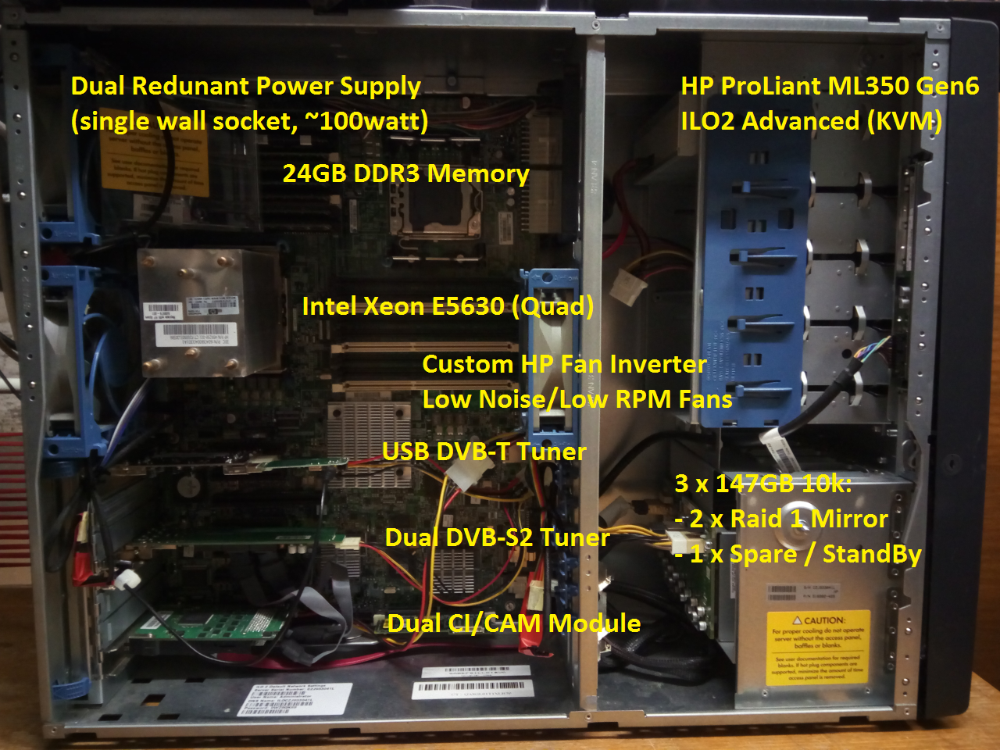
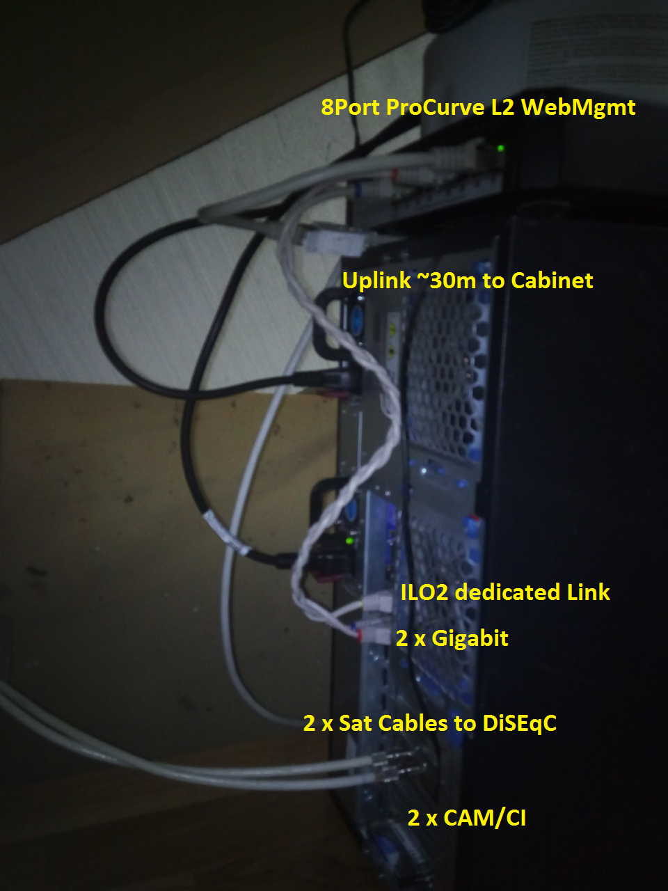
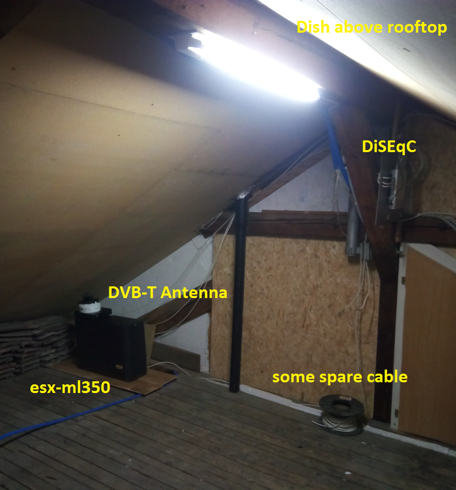

DVB Station Bouquets
Default Stations
Current Stations
All Stations
Operations
Current Tuner Configuration
FronTail Logging
Logging: tail the fail
Other
list of other files
APACHE: Server Status
APACHE: Balancer Manager
Gallery
  